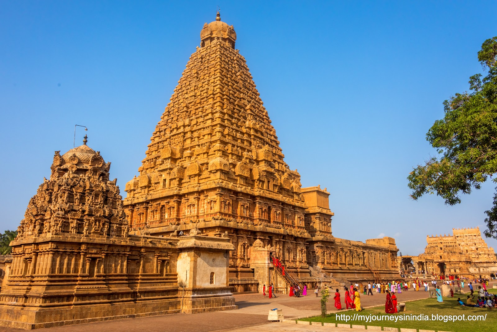
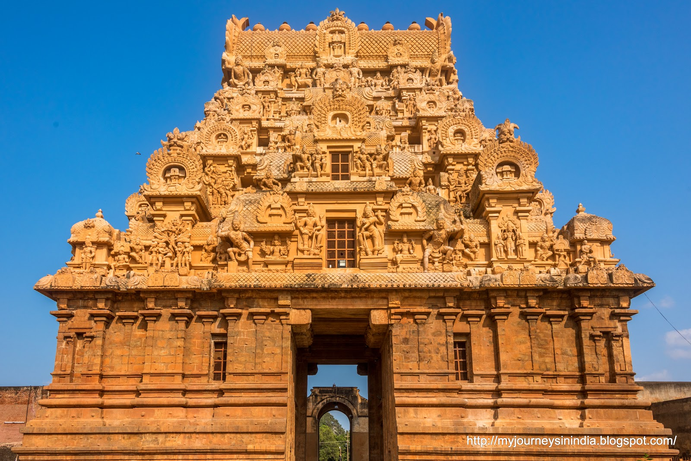
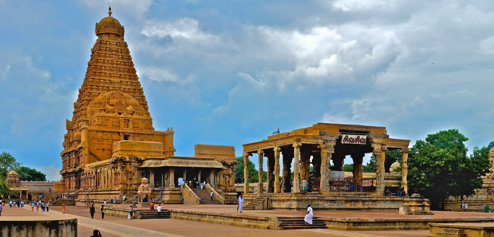
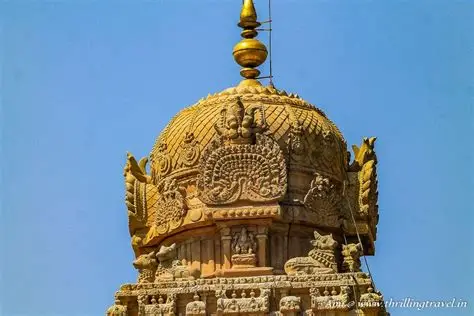

Brihadeeshwara Temple
Thanjavur – The Pride of Chola Architecture
Overview
Brihadeeshwara Temple, also known as the Big Temple, is a magnificent Shaivite temple located in Thanjavur, Tamil Nadu. Dedicated to Lord Shiva in the form of Brihadeeshwarar, this temple stands as one of the greatest architectural achievements of ancient India. Built entirely using granite, the temple reflects the scientific brilliance, artistic excellence, and spiritual depth of the Chola dynasty. Even after more than a thousand years, the structure continues to inspire awe due to its massive scale, flawless symmetry, and timeless beauty.
Recognized as a UNESCO World Heritage Site, the Brihadeeshwara Temple is not just a place of worship but also a living monument of India’s cultural and engineering heritage. The temple complex radiates divine energy and historical grandeur, attracting devotees, historians, architects, and travelers from across the globe.
Sthala Purana
According to the Sthala Purana, Lord Shiva manifested here as Brihadeeshwarar to bless King Raja Raja Chola I, who ruled with deep devotion and dharmic principles. The temple is believed to be a place where cosmic energy converges, symbolizing the boundless nature of Lord Shiva. The towering vimana represents Mount Meru, the cosmic axis of the universe, reminding devotees of the eternal presence of divine consciousness.
It is believed that worshipping Lord Brihadeeshwarar here grants spiritual strength, clarity of mind, and liberation from karmic bonds. The sacred chants and rituals performed daily continue the ancient traditions established during the Chola era.
Moolavar
The presiding deity of the temple is Lord Brihadeeshwarar, worshipped in the form of a colossal Shiva Lingam, one of the tallest in India. The Lingam symbolizes infinite energy and cosmic balance. Goddess Brihannayaki, the divine consort, represents compassion and prosperity. Together, they bless devotees with wisdom, strength, and harmony.
Temple Timings
The Brihadeeshwara Temple remains open daily for devotees to participate in various poojas and rituals. The serene atmosphere during early morning and evening hours enhances the spiritual experience.
Morning: 6:00 AM – 12:30 PM
Evening: 4:00 PM – 8:30 PM
Festivals
The temple is renowned for its grand celebrations, especially Maha Shivaratri, which is observed with great devotion and night-long poojas. Other important festivals include Pradosham, Arudra Darshan, and Chola-era temple festivals that preserve ancient traditions. During these occasions, the temple resonates with Vedic chants, classical music, and spiritual fervor.
History
Brihadeeshwara Temple was constructed in 1010 AD by the great Chola emperor Raja Raja Chola I. The temple stands as a testament to the administrative brilliance, artistic vision, and spiritual devotion of the Chola dynasty. The construction techniques used were far ahead of their time, including the transportation and placement of massive granite blocks without modern machinery.
The towering vimana, rising over 216 feet, remains one of the tallest temple towers in the world. The temple walls are adorned with ancient frescoes depicting Shaivite traditions and Chola cultural life. Over centuries, the temple has remained structurally intact, symbolizing the enduring legacy of Tamil civilization.
Temple Gallery




Darshan & Special Poojas
Devotees can have free darshan throughout the day. Special poojas such as Abhishekam, Archana, and Pradosham poojas are performed on auspicious days. These rituals enhance spiritual connection and are believed to bring peace and prosperity.
Official Information & Contact
For official updates, darshan details, and announcements, devotees may visit the official website of the Brihadeeshwara Temple Temple.
🌐 Official Website:
https://www.brihadeeswaratemple.com/
📞 Temple Contact:
+91 4362 271799
📧 Email:
TforTemples@gmail.com
Temple Location
Brihadeeshwara Temple is located in Thanjavur, Tamil Nadu, and is well connected by road and rail.
📍 Get Directions to Temple